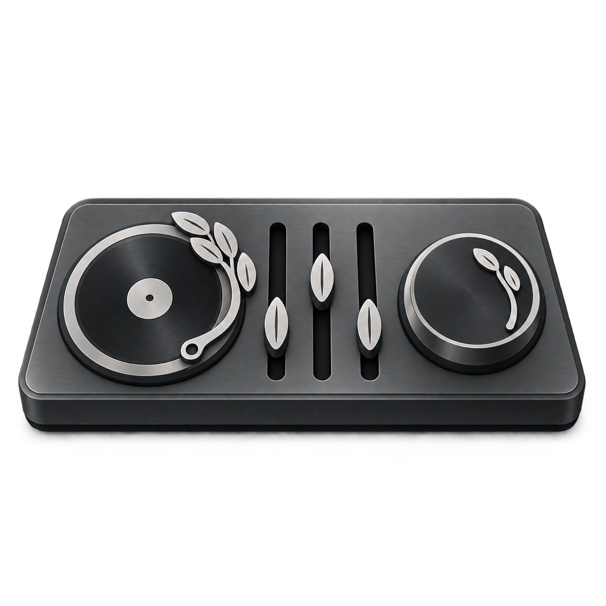

RiceSuiteSearch Clip Post
A · Graphite
Solid hardware form with restrained bevels and pale controls.
One shared layout: rice-stalk turntable, three rice-grain faders, and a master dial with a small rice-stalk pointer. Existing pillar marks stay as they are.
Solid hardware form with restrained bevels and pale controls.

Brushed metal surfaces and a low-profile console housing.
Bolder outlines and simplified depth for small sizes.